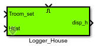
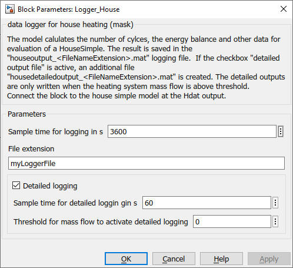

Logger_House
Path: carint/Evaluation
Purpose
Creates data files which enable to evaluate a simple house block of the Carnot blocksetby using
cs_energy_house
m-function.
Inputs:
- set point room temperature
- Hdat : output data of house heating model
- Enable : "true" or "1" activates the logging of the data in the
files
Output:
- disp_h : displaying data of house heating model
- files : "houseoutput_extension.mat" and "housedetailoutput_extension.mat" where extension
is a string you can choose in the parameters of the block.
where extension is a string you can choose in the parameters of the block.
Description
The file "housedetailoutput_extension.mat" is only written
if the parameter "detailed output" is activated.
Detailed outputs
are written only when the heating (or cooling) system massflow is above the
threshold value.
The files are saved in the
current working directory of Matlab unless you specify a complete pathname.
The ElectricPrice input is usefull if you want to evaluate the energy costs
with variable traiffs.
The files contain the following informations in timeseries variables :
- house.Temperature_Ambient : ambient temperature in degree Celsius
- house.Troom : room temperature in degree Celsius
- house.Troom_setpoint : setpoint for room temperature in degree Celsius
- house.Qh : heating energy from the system to the house in Joule
- house.Qc : cooling energy from the system to the house in Joule
- house.Qloss : transmission losses in Joule (negative value for losses)
- house.Qvent : ventilation losses in Joule (negative value for losses)
- house.Qinternal : internal gains in Joule (positive value for gains)
- house.Qsolar : solar gain in Joule (positive value for gains)
- house.T_in : inlet temperature of the heating sytem in degree Celsius
- house.T_out : outlet temperature of the heating sytem in degree Celsius
- house.Mass : integrated massflow through the heating system in kg
- house.Cycles : number of on/off cycles of the pump
- house.OpTime : operation time of the pump in s
For a full list of data point names see
2_Basic_Concepts.
Parameters and Dialog Box
- sample time for data saving in s (standard value 3600 s)
- File extension: the text string replaces "extension"
in the filename "heatingoutput_extension.mat"
- checkbox for additional detailed data file
(some evaluations in cs_energy_house
are only possible with the detailed file, e.g. mean operation temperature)
-
sample time for detailed logging (default value of 60 s, be carefull when
changing this value)
- Threshold for the heating or cooling power to
activate the detailed logging.

Characteristics
Direct Feedthrough Yes
Sample time entered
by user in block parameters
Vectorized Yes